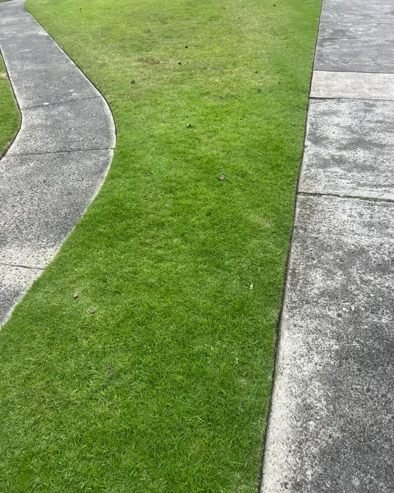
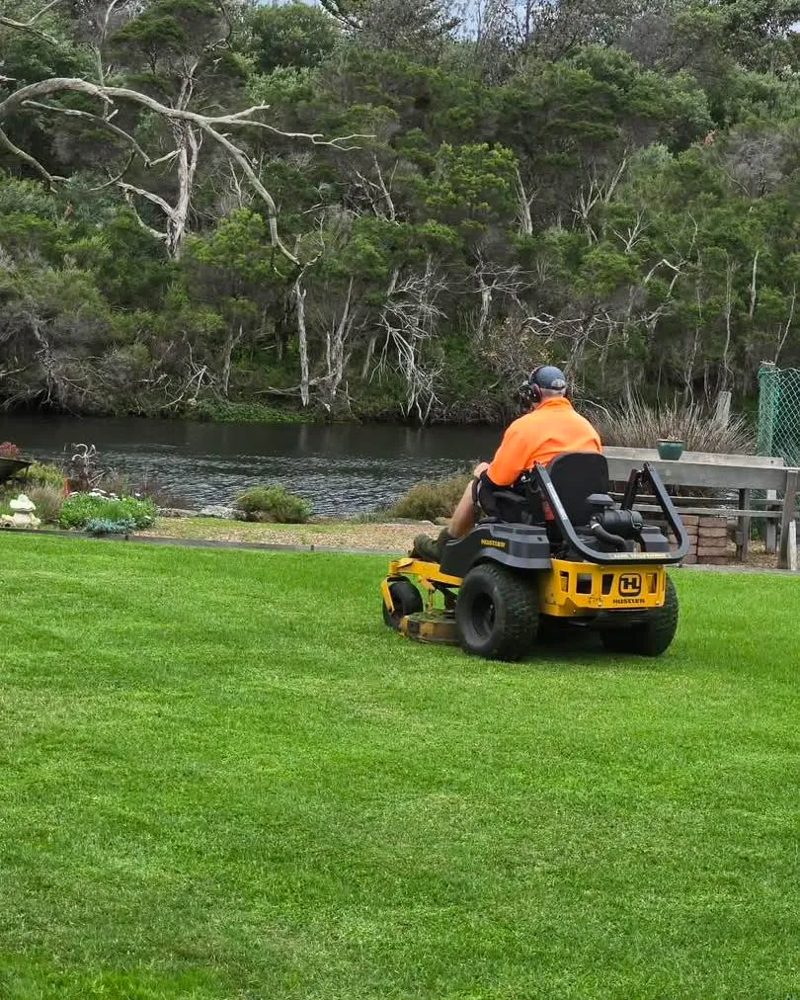

Frankston Lawn & Garden Care Since 2014
Local Lawn Mowing & Maintenance is an owner-operated Frankston business built on reliability, honest pricing and genuine local care — not a franchise or a call centre.

A Local Team That Treats Your Property Like Its Own
Local Lawn Mowing & Maintenance was established in Frankston in 2014 by owner-operator Peter Jakubczyk. What started as a commitment to do lawn care properly — turning up on time, doing a genuinely good job, and leaving every property spotless — has grown into one of the most trusted lawn and garden teams on the Mornington Peninsula.
More than a decade on, we still run the business the same way: you deal directly with a local who knows Frankston lawns, Frankston gardens and Frankston weather. No middlemen, no scripts, no rushed jobs — just reliable, insured, professional lawn and garden care from people who live and work in the area.
The Difference of a Genuine Local
Reliable & On Time
We turn up on the day we say, every time — the single thing customers tell us they value most.
Registered & Insured
A registered, fully insured business since 2014, so every job is covered and above board.
Honest, Firm Pricing
A clear quote before we start and no lock-in contracts — you only stay because you're happy.
Trusted Across Frankston & the Peninsula
Nine Years and Still Recommending Us
"We have had Peter look after our garden for the last 9 years, our lawns are well kept, he is punctual and a pleasure to deal with. I would highly recommend him."
"We have been using Local Lawn Mowing for over 6 months now and have been very happy with the service. Peter is reliable, friendly and does the job efficiently."
"Great local business, lawns are always kept neat and look great! Would highly recommend."
Let's Take Care of Your Lawn & Garden
Experience the reliable, local difference for yourself. Request a free, no-obligation quote today.
Request a Free Quote